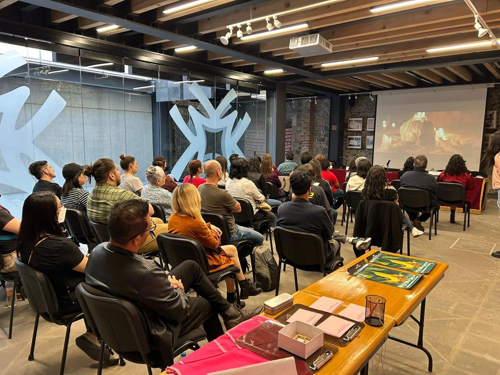

2 al 6 de diciembre
FICXILITLA 2025
Experimenta el cine en la selva
El FICXILITLA es una experiencia cinematográfica cuyo objetivo es llevar historias a públicos diversos, generando disertaciones en un espacio seguro y surrealista.

Conecta con tu comunidad
El FICXILITLA es un espacio de interacción entre el público, realizadores y especialistas de la industria cinematográfica. Organizamos talleres, conferencias, recorridos y sesiones de preguntas y respuestas tras la proyección de cortometrajes y largometrajes en nuestras distintas sedes.
Nuestra ventana de exhibición también es un punto de encuentro para el networking entre el gremio cinematográfico.
El Festival Internacional de Cine de Xilitla (Xilitla Film Fest) acepta inscripciones por FilmFreeway: